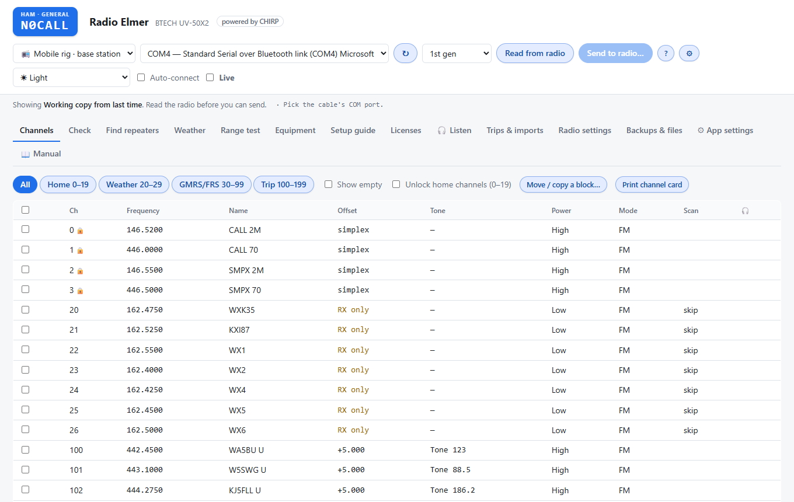
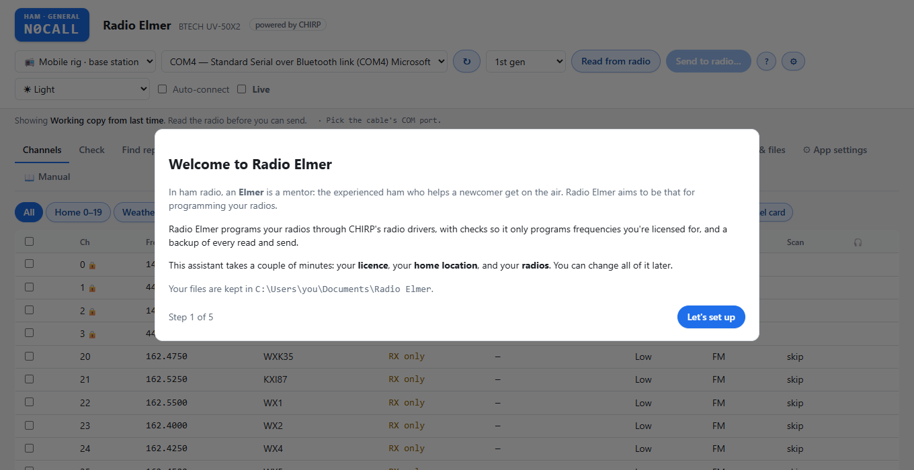
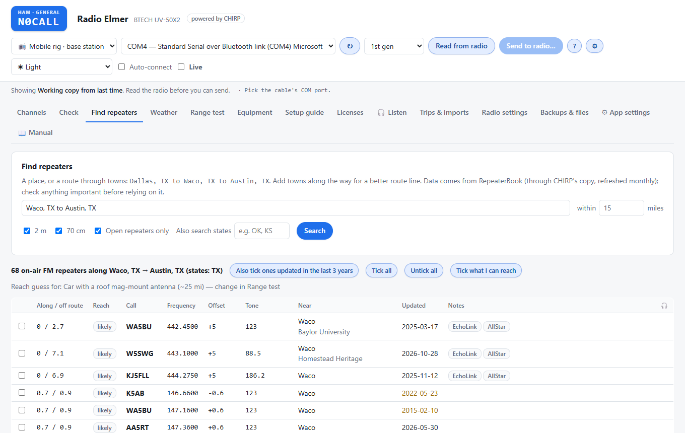
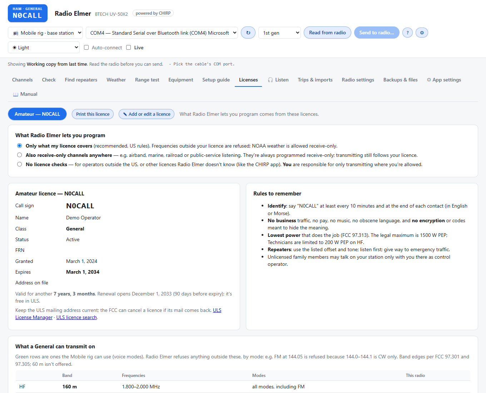
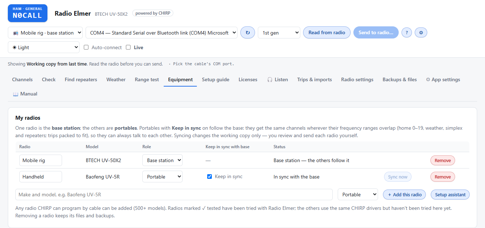
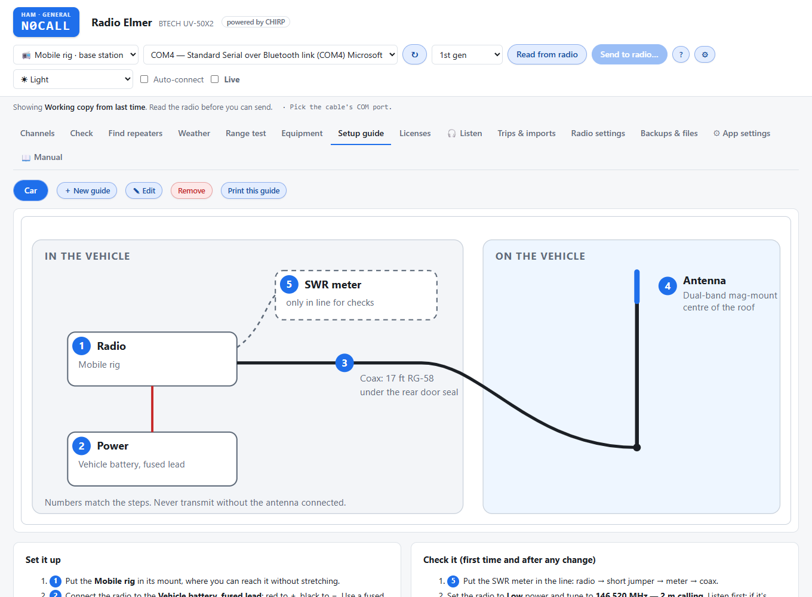
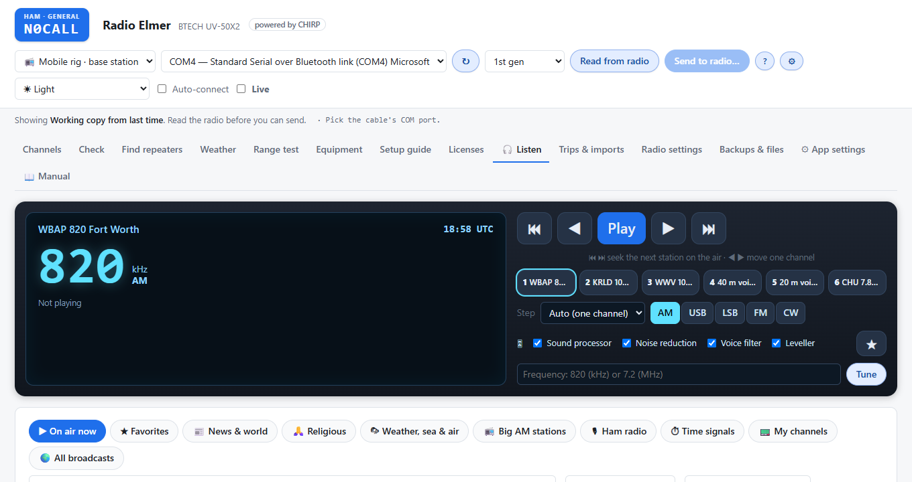
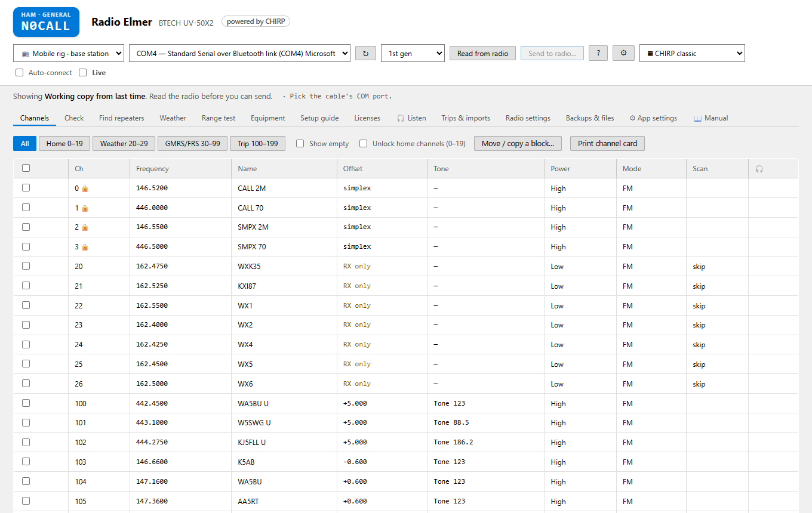
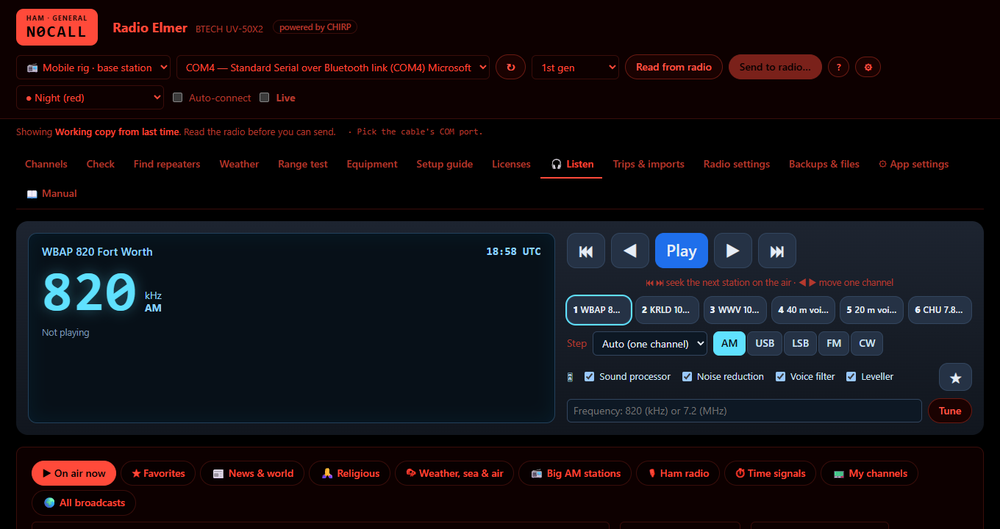

Program your radios with a mentor beside you.
Radio Elmer is a free desktop app for programming two-way radios. It's powered by CHIRP, so it works with hundreds of cable-programmable radios, and it adds guidance, licence checks and safety nets for newer hams.
For Windows 10 and 11, Linux and Mac. CHIRP's radio drivers are included.

Why “Elmer”? In ham radio an Elmer is the experienced operator who helps a newcomer get licensed, choose and program a radio, put up an antenna and make a first contact.
Radio Elmer tries to be that for programming: it explains what each setting does, checks your channels against your licence, shows every change before it reaches the radio, and keeps a backup of every read and send.
What it does
Everything CHIRP's radio drivers can do, with help aimed at the operator who's just passed their exam.
📻 500+ radios
Read, edit and send any radio CHIRP can program by cable. Tested on the BTECH UV-50X2 and Baofeng UV-5R.
✅ Review before sending
You edit a working copy. Every change is listed before it's sent, and the radio is read back afterwards to confirm.
🪪 Licence checks
Channels are checked against your US amateur licence class and mode (FCC Part 97). NOAA weather is receive-only; GMRS is never set to transmit.
📍 Repeaters for the trip
Find repeaters near a town or along a route, with reach estimates, plus NOAA weather channels for where you're going.
💾 Backups kept
Every read and send is backed up and the app never deletes a backup. Your home channels are locked unless you unlock them.
🎧 Listen
A car-radio style tuner for public KiwiSDR receivers, 0–30 MHz, with seek, presets and local noise reduction.
🧭 Setup assistant
On first start it walks you through your licence (with a call sign lookup), your home town and your radios.
🔧 Your station
An equipment list with SWR readings, and setup guides with a hook-up diagram and numbered steps.
🎨 Easy on the eyes
Light, dark, high contrast, Night (red) to keep your night vision, and a CHIRP classic look.
A quick tour
Screens from a demo station (N0CALL) near Waco, Texas.
Setup assistant
Three short steps on first start: your licence, your home, your radios. Your files are kept in Documents\Radio Elmer, separate from the app.

Find repeaters
Search near a town or along a route. Each repeater shows distance, tone and an estimate of whether you'll reach it, and can be added with one click.

Your licence, explained
See exactly what your class can transmit on, by band and mode. Radio Elmer refuses channels outside it, and you choose how strict it should be.

Several radios
One base station and portables that keep in sync with it, so the family's handhelds always have the same channels as the car.

Setup guides
Build a guide for each way you set up your station: a hook-up diagram and numbered steps you can print and keep with the gear.

Listen
Tune public shortwave receivers around the world like a car radio: seek, step, six presets and noise reduction.

Pick your look
Change it any time under ⚙ App settings.


Download
Radio Elmer is free under the GNU GPL v3. Downloads are on the project's GitHub releases page.
Windows installer
The easy way. No admin rights needed.
- Download Radio Elmer Setup.
- Run it and follow the steps.
- Start Radio Elmer from the Start menu.
Windows zip
No install: unzip it anywhere and run.
- Download the for Windows zip.
- Unzip it to a folder.
- Double-click Start Radio Elmer.
Linux and Mac
Needs Python 3.10 or newer. CHIRP is included.
- Download the for Linux and Mac zip and unzip it.
- In a terminal, in that folder, run
sh start-radio-elmer.sh. The first start sets things up (a minute or two). - Leave the terminal open while you use Radio Elmer.
Mac: the built-in Python is too old; install the latest from python.org first. Tested on Ubuntu (except cable reading and sending); macOS hasn't been tested yet, so Mac reports are especially welcome.
Get the Linux & Mac zipThis is a beta. Windows will say the installer is from an “unknown publisher” because it isn't code-signed yet: choose More info → Run anyway. Radio Elmer backs up your radio before every send, but please keep your own copy of anything important, and tell us what you find.
Built on CHIRP, with thanks
Radio Elmer wouldn't exist without CHIRP. Every radio Radio Elmer programs, it programs through CHIRP's radio drivers, used unchanged. CHIRP is free, open-source radio programming software, trusted by radio enthusiasts since 2008. It was created by Dan Smith, KK7DS, and is built by many volunteer contributors who work out how each radio model talks to a computer.
Radio Elmer adds a guided way of working on top: licence checks, trip planning, review before sending, setup guides. The hard part, talking to hundreds of different radios, is CHIRP's. A snapshot of CHIRP comes with Radio Elmer, and the app tells you when a newer one is out so you can get it from chirpmyradio.com.
How you can support CHIRP
- Get CHIRP updates from chirpmyradio.com; Radio Elmer tells you when there's a new one.
- If a radio reads or writes wrongly in the CHIRP app too, report it to the CHIRP project.
- If you can, help them test or write drivers for new radios.
Radio Elmer is a separate project, not made or supported by CHIRP. Please bring Radio Elmer questions and problems to our community, not to CHIRP. If you'd rather use CHIRP's own app, it's at chirpmyradio.com.
Help & community
Questions, bugs and radio reports all go to the project's GitHub page. Reading is open to everyone; posting needs a free GitHub account.
💬 Discussion board
Ask a question, share how you set up your station, suggest an idea, or help another ham.
Join the discussion🐞 Report a bug
Something went wrong? In Radio Elmer, use App settings → Report a problem to gather the details (call signs are removed), then paste them into the form.
Report a bug📡 Share a radio test
Tried Radio Elmer with your radio? Tell us whether reading and sending worked. Each report helps the next ham with that model.
Share a radio test💡 Suggest a feature
An idea for Radio Elmer? Post it in the discussion board's Ideas section, where others can add to it.
Suggest an idea📖 The manual
Everything from the first read of your radio to troubleshooting. It's also inside the app (📖 Manual).
Open the manual🔎 Known problems
See what's already been reported, and whether it's fixed, before posting a new bug.
See reported bugsA problem that also happens in the CHIRP app itself is a CHIRP radio-driver issue: please report those to the CHIRP project.